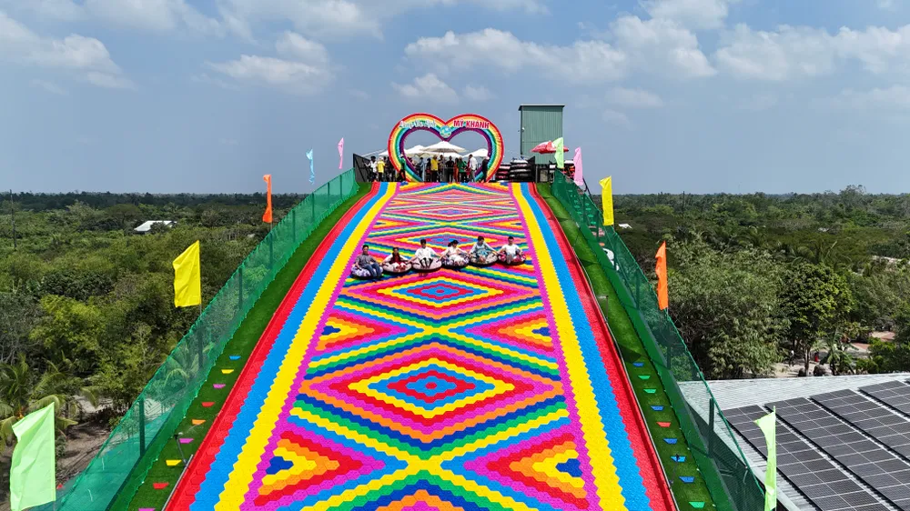
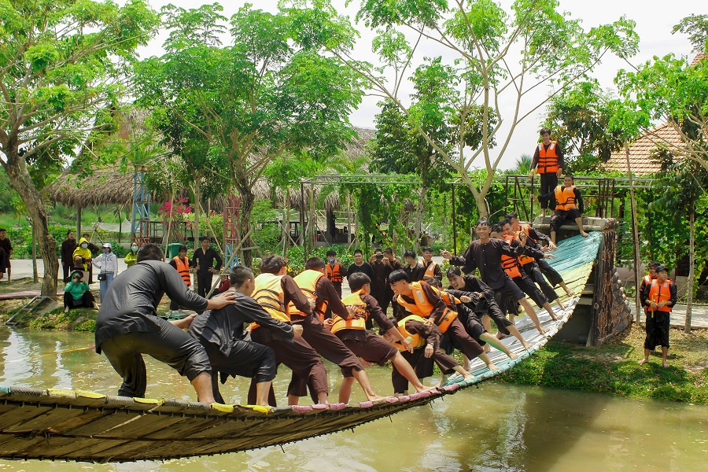
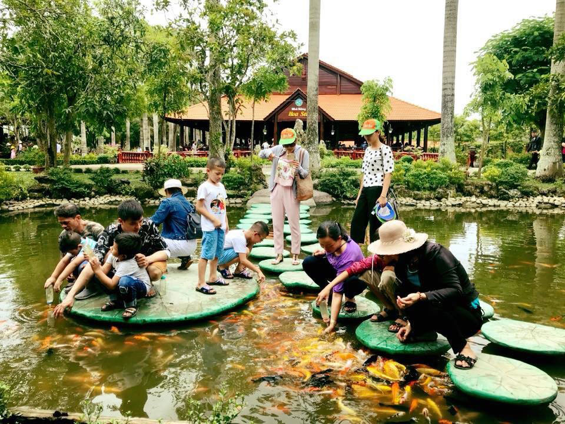
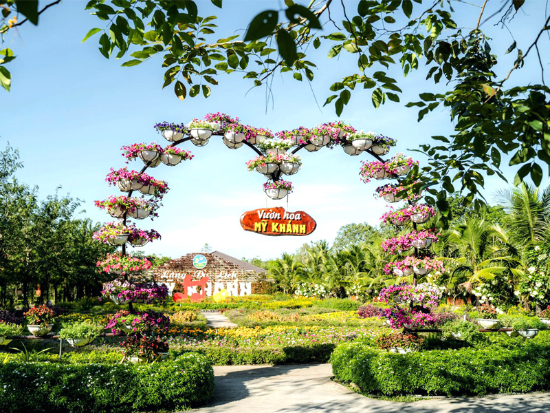

Hình Ảnh Nổi Bật




Giới Thiệu
Làng du lịch Mỹ Khánh tọa lạc tại huyện Phong Điền, cách trung tâm thành phố Cần Thơ khoảng 10 km, là khu du lịch sinh thái miệt vườn rộng hơn 50.000 m² với nhiều vườn cây ăn trái và ao hồ.
Tại đây, du khách có thể tham gia các hoạt động dân dã như tát mương bắt cá, câu cá sấu, đua heo, đua chó, xem xiếc khỉ, cùng nhiều trò chơi dân gian khác mang đậm bản sắc miền Tây.
Vào buổi tối hoặc theo lịch trình, làng còn tổ chức chương trình đờn ca tài tử phục vụ du khách, kết hợp thưởng thức trái cây tươi và các món ăn đặc sản Nam Bộ ngay trong khuôn viên.
Thông Tin Tham Quan
- Địa chỉ: Ấp Mỹ Ái, Xã Mỹ Khánh, Huyện Phong Điền, Thành phố Cần Thơ
- Giờ mở cửa: 07:00 - 17:30
- Giá vé tham quan: Từ 80.000 VNĐ/người
Hoạt Động Nổi Bật
Tát mương bắt cá
Đua heo, đua chó
Xiếc khỉ
Đờn ca tài tử
Vườn trái cây
Câu cá sấu
Ẩm thực miệt vườn
Trò chơi dân gian